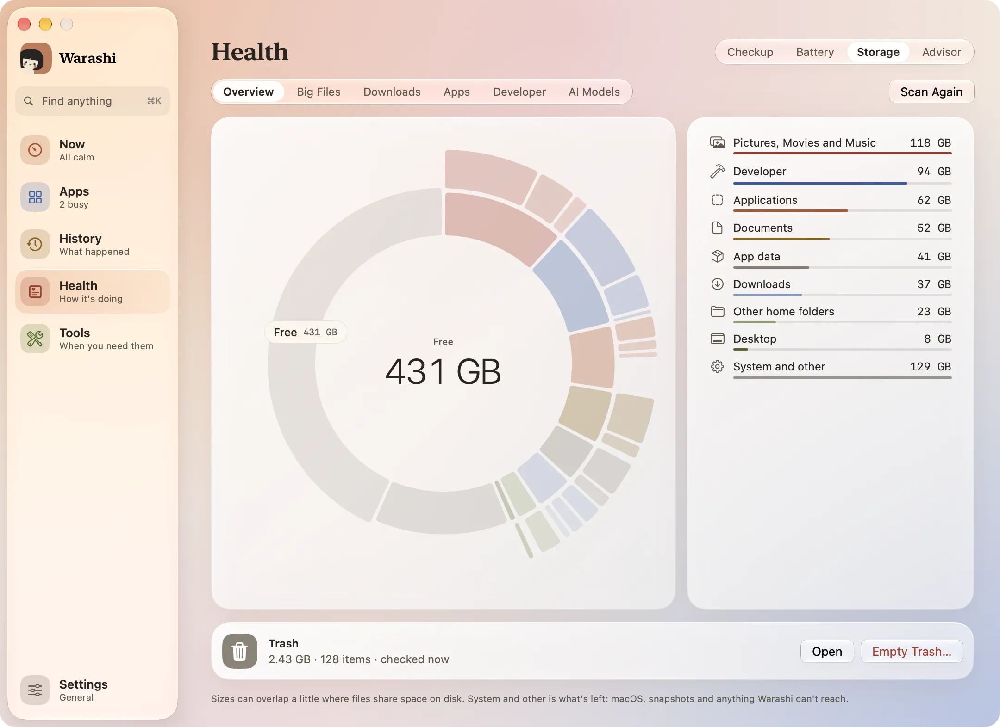

Spazio è una scheda di Salute. Mostra cosa occupa il disco di avvio. Si apre con gli ultimi risultati e li aggiorna se hanno più di sei ore. Tutto ciò che rimuovi va nel Cestino, dopo il tuo sì, così puoi rimetterlo a posto finché non lo svuoti.
- Apri Spazio
Scegli Salute, poi Spazio, premi il riquadro Disco in Adesso o nella finestra della barra dei menu, oppure Apri sulla scheda dello spazio in Controllo.


- Attiva l'Accesso completo al disco
Se non l'hai fatto nel tour di benvenuto, una scheda te lo propone. Premi Apri Impostazioni di Sistema e attiva Warashi nell'elenco, una sola volta. Così Spazio include Scrivania, Documenti, Download, foto e dati delle app. Warashi legge solo le dimensioni, mai i tuoi file, e nulla lascia il tuo Mac. Puoi saltare: Spazio misura il resto e macOS non ti interrompe mai.
- Esplora l'anello
L'anello interno sono le tue categorie, più Sistema e Libero. Quello esterno sono le cartelle più grandi di ciascuna. Passa sopra una parte per vedere nome e dimensione; il resto si attenua e la sua riga si illumina nell'elenco.
- Guarda cosa c'è dentro
Scegli una categoria per vedere i suoi elementi più grandi. La freccia accanto a una cartella entra al suo interno, misurando tutto ciò che contiene, e puoi scendere livello dopo livello. La lente d'ingrandimento mostra un elemento nel Finder. I tuoi file hanno anche un pulsante per il Cestino.
- Scansiona quando vuoi
Premi Analizza di nuovo quando vuoi. Puoi lasciare la pagina mentre analizza. Da solo, Spazio analizza di nuovo quando lo apri e l'ultima analisi risale a più di un giorno fa, e mai a batteria o in Modalità Basso consumo: un'analisi legge buona parte del disco, quindi aspetta il caricabatterie a meno che tu non lo chieda.
- Svuota il Cestino
Sotto l'anello, la scheda Cestino mostra quanto c'è nel Cestino e quanti elementi, compreso il Cestino dei dischi collegati. Controlla quando apri la pagina e ogni due minuti finché resta aperta. Svuota il Cestino… chiede prima, dice quanto andrà via e poi elimina tutto per sempre, con un conteggio man mano. Ciò che è in uso resta, e la scheda lo dice. Ciò che può eliminare solo un amministratore, come un'app messa in Applicazioni da un installer, Warashi lo passa al Finder, che chiede la tua password. La prima volta, macOS chiede se Warashi può controllare il Finder: consentilo, altrimenti la scheda dice cosa è rimasto, con Apri Automazione.
Le altre schede
- Pulizia: tutto ciò che si può eliminare, in tre gruppi. Da pulire in sicurezza: cache di app e browser, log, dati di compilazione e download di pacchetti di Xcode, tutto ciò che si ricrea da solo; Sposta tutto nel Cestino… li sposta insieme dopo una sola domanda. Controlla prima: installer in Download più vecchi di una settimana, seconde copie di un download (come
Rapporto (1).pdf) e le copie che Mail conserva degli allegati che hai aperto. Fai attenzione: backup di iPhone e iPad, che potrebbero essere l'unica copia. Le cache delle app aperte e quelle di macOS non vengono toccate. Download, Mail, Safari e i backup richiedono l'Accesso completo al disco. Sotto c'è la scheda del Cestino, che dopo averlo svuotato dice quanto spazio è tornato. La scheda Pulizia sotto l'anello in Panoramica mostra quanto si può pulire in sicurezza. - File grandi: file oltre 100 MB, ordinati dal più grande o dal più vecchio.
- Download: tutto ciò che è nella cartella Download, dal più vecchio, con gli installer segnati: di solito non servono più quando l'app è a posto. Richiede l'Accesso completo al disco.
- App: ogni app che hai installato, prima quelle non aperte da tre mesi. Rimuovi… elenca l'app e ciò che ha lasciato nella tua Libreria (dati dell'app, cache, impostazioni, finestre salvate, log e, con l'Accesso completo al disco, dati della sandbox), ognuno con la sua dimensione e una spunta, e sposta nel Cestino quelli selezionati. Esci prima dall'app. Se macOS rifiuta, consenti Warashi in Gestione app nelle Impostazioni di Sistema. Le app di Apple non sono elencate. In fondo, Lasciati da app che hai rimosso elenca ciò che le app già eliminate hanno lasciato nella tua Libreria, in base al loro identificatore, intatto da almeno un mese. Non viene mai elencato nulla di uno sviluppatore con un'app ancora installata, né dati condivisi o di Apple.
- Sviluppatore: ciò che gli strumenti per sviluppatori riempiono e riempiono di nuovo: la cartella
node_modulesdi ogni progetto, i prodotti di compilazione, il supporto dei dispositivi e le cache di Xcode, e le cache di download di Homebrew, npm, Yarn, pnpm, Bun, pip, CocoaPods, Swift Package Manager, Gradle, Cargo e Go. Ogni riga dice se si ricrea da sola e va nel Cestino dopo la tua conferma. Anche gli archivi di Xcode sono elencati, segnati come non ricreabili. I Simulatori sopra i 500 MB sono elencati per dispositivo e versione di iOS con l'ultimo utilizzo; Elimina… ne rimuove uno con lo strumento di Xcode, con le sue app e i suoi dati. Se usi Docker, Pulisci… fa rimuovere a Docker le immagini che nessun container usa, la cache di compilazione e i container fermi; i container in esecuzione e i volumi restano. I progetti in Documenti, Download e Scrivania vengono esaminati solo con l'Accesso completo al disco. - Modelli AI: i modelli di Ollama, LM Studio e Hugging Face, con le loro dimensioni. I modelli di LM Studio e Hugging Face possono andare nel Cestino. Ollama condivide i file tra i modelli, quindi Copia comando ti dà il suo
ollama rmda eseguire in Terminale.
Cosa significano le categorie
- Sviluppatore: dati di Xcode e Simulatori.
- Dati delle app: tutto ciò che è nella tua cartella Libreria, tranne Sviluppatore.
- Cestino: ciò che aspetta di essere svuotato.
- Altre cartelle home: qualsiasi altra cosa direttamente nella tua cartella home, come una cartella Code.
- Sistema e altro: ciò che resta: macOS stesso, gli snapshot e i posti che Warashi non può leggere. La nota sotto l'anello dice quanto è eliminabile.
Se qualcosa non va
- Alcuni posti richiedono l'Accesso completo al disco: premi quella riga nell'elenco, poi Apri Impostazioni di Sistema. Se Warashi non è nell'elenco, trascinaci dentro la sua icona. Se ancora non viene contato, premi Riapri Warashi.
Altro in Risoluzione dei problemi, oppure scrivi a adam@warashi.app.